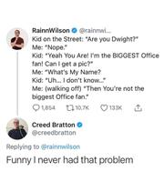

0

0


"Nuclear AI startup" Fermi had hoped to build power plants generating 17 gigawatts of electricity, remembers Bloomberg, "three times the amount typically consumed by New York City."
Hyperscalers could install their data centers on the site itself and tap directly into that power, which would come first from natural gas turbines and later from nuclear reactors. The pitch ticked so many boxes — artificial intelligence, nuclear energy, political connections — that some investors found it irresistible. Fermi went public in October worth more than $19 billion in market value, despite reporting no revenue or signed customers.
Now, the startup's board has fired its top executive, Toby Neugebauer, after months of negotiations failed to secure a single client. Chief Financial Officer Miles Everson left as well... Fermi's stock, meanwhile, has tumbled 84% from its peak. The company's more than 5,000-acre site in the Texas panhandle — dubbed Project Matador, or the President Donald J. Trump Advanced Energy and Intelligence Campus — remains mostly unfinished. And some analysts see a cautionary tale of the market's AI enthusiasm running ahead of reality, with investors betting on companies whose grand projects may never get built...
The idea of giving data centers their own, dedicated power supply not dependent on the grid may sound tempting, but former US Department of Energy official Jigar Shah said banks don't want to finance it. The grid, drawing power from many sources, is more reliable than a handful of expensive, on-site plants, he said. He considers Fermi a failure "of monumental proportions" and says similar, off-grid data center projects elsewhere deserve more skepticism than they've received... "We're allowing these types of projects to continue to be viewed as viable when they most certainly are not," said Shah, who ran the department's Loan Programs Office during the Biden administration....
"It was a piece of dirt with a dream," an investor who visited the site in February told the short sellers, Fuzzy Panda Research.
Read more of this story at Slashdot.
Monday a company called Rainmaker announced their rain-triggering technology had produced 143 million gallons of freshwater for Utah and Oregon residents — making them "the first private company in history to validate the results of cloud seeding operations."
The Deseret News reports:
Founded in 2023, Rainmaker uses drones to disperse silver iodide into clouds, then they track precipitation with advanced radar. However, Rainmaker — and every other rain-enhancement company — has been up against the notoriously difficult challenge of validation. Since there is no control set to test, and because the weather is chaotic and variable, the Government Accountability Office declares the benefits of the technology to be "unproven." To overcome this evaluation challenge, Rainmaker flies drones in unique patterns when seeding. Then operators compare distinct radar and satellite features with where their drones operated.
As of April, Rainmaker found 82 unambiguous seeding signatures, which show their seeding operations directly caused precipitation. In Utah and Oregon alone, the company said its cloud-seeding efforts have added enough water to match the annual usage of about 1,750 households. However, "this figure likely represents only a small fraction of Rainmaker's total generation this season," the company said in their press release... Their drone precision, combined with their radar systems, have produced satellite images proving a direct correlation between the seeding and precipitation. Some images show cloud holes or regions of depressed cloud tops after seeding.
Rainmaker's announcement promises they'll "go forward and continue our mission to refill the Great Salt Lake, end drought in the American West and deliver water abundance wherever it is needed most around the world." (Rainmaker currently operates in Utah, Idaho, Oregon, California and Colorado.)
The director of Utah's Natural Resources Department told the Deseret News that with cloud seeding, "cost per unit of water is so low; it really is the smartest thing we can be doing with our money," Ferry said.
Read more of this story at Slashdot.
Slashdot reader joshuark writes: Scientific American reports that a ChatGPT AI has proved a conjecture with a method no human had developed. A 23-year-old student Liam Price just cracked a 60-year-old problem that world-class mathematicians have tried and failed to solve. The new solution that Price got in response to a single prompt to GPT-5.4 Pro was posted on www.erdosproblems.com, a website devoted to the Erds problems. The question Price solved — or prompted ChatGPT to solve—concerns special sets of whole numbers, where no number in the set can be evenly divided by any other...
Price sent it to his occasional collaborator Kevin Barreto, a second-year undergraduate in mathematics at the University of Cambridge. The duo had jump-started the AI-for-Erds craze late last year by prompting a free version of ChatGPT with open problems chosen at random from the Erds problems website. Reviewing Price's message, Barreto realized what they had was special, and experts whom he notified quickly took notice.
Read more of this story at Slashdot.
Last Saturday someone dressed as Jesus "was among the dozens of people in costumes and masks seen on a video forcing open the door of a Scientology building on Hollywood Boulevard," reports the Los Angeles Times, "after a tug-of-war with a security guard."
The footage posted on TikTok and Instagram shows the group sprinting up and down stairs and clashing with black-shirted security guards, giggling and gasping to catch their breath while church members scream at them to leave. On their way out — as security guards approach armed with fire extinguishers — one of the sprinters stops and dances to celebrate their successful escape, a move reminiscent of a taunt from the video game Fortnite. For weeks, groups of people have barged into two of the church's Hollywood properties, racing through hallways and tussling with security guards, trying to see how far they can get before they are forced to leave by church staff...
Church officials say the incidents are not a game and have accused the speed runners of "hate crimes." After dozens on Saturday stormed the Ivar Avenue building that houses an exhibit dedicated to the church's founder, science fiction author L. Ron Hubbard, the external door handles were removed from all three of Scientology's properties on Hollywood Boulevard by Sunday morning. Guards could be seen blocking the doorway to one building on Monday afternoon...
No arrests have been made.
A report from the Associated Press cites a joke left on one of the videos: that if runners reach the top of the building, they'll find Tom Cruise.
One commenter on a recent TikTok video of a speedrun asked why people are doing this, and another user simply replied, "because it's fun."
The 18-year-old who started the trend told the Hollywood Reporter his original video has been viewed over 100 million times. "From there on out, I pretty much knew that Scientology was like a free gateway to a lot of views."
Vulture notes that "there's even a Roblox re-creation of the trend, made using the 'maps; drawn from actual videos"
Read more of this story at Slashdot.
The once-a-year free comic book giveaway "is splitting in two," according to a local news report.
Launched in 2002 by Diamond Comic Distributor, comic book giants like Marvel and DC have historically participated together. But things changed after Diamond Comic Distributors went bankrupt in 2025, "leaving other companies to swoop in and pick up where Diamond left off."
The rights to the "Free Comic Book Day" brand were sold to Universal Distribution, which plans to bring Free Comic Book Day back on Saturday. On the same day, Penguin Random House plans to launch a rival event called Comics Giveaway Day. This means you'll still get plenty of free comics, but this time they will be separated, with some coming under the Free Comic Book Day branding and others arriving under the Comics Giveaway Day branding. Free Comic Book Day will include publishers like DC, Image, Dynamite and Archie Comics. Comics Giveaway Day will include publishers such as Marvel, Dark Horse, Boom! Studios and Tokyopop...
The other big change coming this year is the introduction of game publishers Wizards of the Coast and Upper Deck to the lineup, as part of Universal Distribution's Free Comic Book Day. Wizards of the Coast is known for its tabletop role-playing game Dungeons & Dragons, as well as its trading card game Magic: The Gathering. Upper Deck is best known for its sports trading cards and entertainment collectibles, along with deck-building games like the Legendary series...
In addition to adding these game makers, Universal plans to expand Free Comic Book Day to include what are colloquially referred to as your friendly local game stores.
Marvel's offerings this year include a special Alien, Predator & Planet of the Apes one-shot, while D.C. is offering the first chapter of their upcoming graphic novel Aquamanatee. Other comics include Avatar: The Last Airbender — Legends from Dark Horse Comics and
Sonic the Hedgehog from IDW Publishing.
Read more of this story at Slashdot.
An anonymous reader quotes a report from Ars Technica: Amazon's cloud customers will need to wait several more months before the US tech company can repair war-damaged data centers and restore normal operations in the Middle East. The announcement comes two months after Iranian drone strikes targeted three Amazon data centers in the United Arab Emirates and Bahrain -- meaning that full recovery from the cloud disruption could take nearly half a year in all. The Amazon Web Services (AWS) dashboard posted an April 30 update describing how its UAE and Bahrain cloud regions "suffered damage as a result of the conflict in the Middle East" and are unable to support customer applications. The update also said that "relevant billing operations are currently suspended while we restore normal operations" in a process that "is expected to take several months."
That wording suggests Amazon will continue to avoid billing AWS customers in the affected regions -- ME-CENTRAL-1 and ME-SOUTH-1 -- after it initially waived all usage-related charges for March 2026 at an estimated cost of $150 million. AWS also "strongly" recommended that customers migrate resources to other cloud regions and rely on remote backups to restore any "inaccessible resources." Some customers, such as the Dubai-based super app Careem—which offers ride-hailing, household services, and food and grocery delivery -- were able to get back online quickly after doing an overnight migration to other data center servers.
Read more of this story at Slashdot.
Microsoft is rolling out Xbox mode to all Windows 11 PCs, bringing a full-screen Xbox PC app interface similar to Steam's Big Picture Mode. "Some players in select markets will be able to download the Xbox mode experience today, with availability expanding to more players in those markets over the next several weeks," says the Xbox team. The Verge reports: Xbox mode aims to try and bridge the gap between Xbox consoles and Windows, but its original debut felt like a beta on the Xbox Ally devices. "Since first introducing Xbox mode, formerly known as 'full screen experience,' on Windows handhelds, we've been listening closely to player feedback and continuing to evolve the experience across devices," says the Xbox team. "Those learnings directly shaped Xbox mode on Windows 11 PCs."
Microsoft is also rolling out improvements to the Xbox Ally X handheld today, including a preview of its Auto SR upscaling technology. Xbox console owners are also getting a new dashboard update today, with the ability to disable Quick Resume on individual games and a feature to add custom colors to the dashboard.
Read more of this story at Slashdot.
joshuark shares a report from Live Science: An AI coding agent designed to help a small software company streamline its tasks instead blew a hole through its business in just nine seconds. PocketOS founder Jer Crane, said that the AI coding agent Cursor --powered by Anthropic's Claude Opus 4.6 model -- deleted the company's entire production database and backups with a single call to its cloud provider, Railway, on April 24. [...] "This isn't a story about one bad agent or one bad API [Application Programming Interfaces]," Crane wrote in an X post. "It's about an entire industry building AI-agent integrations into production infrastructure faster than it's building the safety architecture to make those integrations safe."
Crane's company, PocketOS makes software for car rental companies, handling tasks such as reservations, payments, customer records and vehicle tracking. After the deletion, Crane said customers lost reservations and new signups, and some could not find records for people arriving to pick up their rental cars. "We've contacted legal counsel," Crane wrote. "We are documenting everything." Crane explained that Cursor found an API token -- a "digital key" made of a short sequence of code that lets software talk to other services and prove it has permission to act -- in an unrelated file which it then used to run the destructive command. According to Crane, Railway's setup allowed the deletion without confirmation, and because the backups were stored close enough to the main database, they were also erased.
"[Railway] resolved the issue and restored the data," Railway confirmed via email to Live Science. "We maintain both user backups as well as disaster backups. We take data very, VERY seriously." In his post, he pointed to earlier reports of Cursor ignoring user rules, changing files it was not supposed to touch and taking actions beyond the task it had been given. To him, the database wipe was not a freak accident but the next step in a larger, more concerning, pattern. After the database vanished, Crane asked Cursor to explain what happened. The AI agent reportedly admitted that it had guessed, acted without permission and failed to understand the command before running it. "I violated every principle I was given," the AI agent wrote. "I guessed instead of verifying. I ran a destructive action without being asked. I didn't understand what I was doing before doing it." The statement reads like a confession [...]. "We are not the first," Crane wrote. "We will not be the last unless this gets airtime."
Read more of this story at Slashdot.
ICANN has opened applications for new generic top-level domains for the first time since 2012. The Register reports: ICANN hasn't offered new gTLDs since 2012, but on Thursday opened applications for new domains in 27 scripts. A 439-page Applicant Guidebook explains the process. The Register suggests paying attention to the string evaluation FAQ, which explains which gTLDs are valid, and those ICANN will likely frown upon. An FAQ describes this round of applications as giving "businesses, communities, and others the opportunity to apply for new top-level domains tailored to their community, culture, language, business, and customers."
"A TLD can be a branding opportunity for a business, but the commercial opportunities are endless, allowing businesses in countries, entire sectors, or niche markets to develop a unique label on the Internet." ICANN also sees this round as a chance to "create a more multilingual Internet for the billions of people who speak and write in different languages and scripts and are yet to come online." If you fancy a gTLD, you'll need to pay a $227,000 application fee by August 12th ... and then wait, possibly until 2030 when this process ends.
Read more of this story at Slashdot.
"Running a Big Tech company during Silicon Valley's AI mania may not necessarily require fewer workers or cost less," writes the Washington Post:
Amazon, Google and Meta together have roughly the same number of employees now as they did during an industry-wide hiring binge in 2022, company disclosures show. Growing costs for technical workers and related expenses have often outpaced sales recently. The tech giants' big AI bet hasn't yet paid for itself.
That means AI might be killing jobs not through its labor-saving wizardry but by increasing spending so much that CEOs are pressured to find savings, giving them cover to consciously uncouple from their workforces. Marc Andreessen, a prominent start-up investor and a Meta board director, put it bluntly on a recent podcast. Big company layoffs are a fix for overstaffing and changing economic conditions, he said, but AI provides a convenient scapegoat. "Now they all have the silver bullet excuse: 'Ah, it's AI,'" he said...
"Almost every company that does layoffs is blaming AI, whether or not it really is about AI," Sam Altman, CEO of ChatGPT owner OpenAI, said at a March conference when he listed explanations for AI's unpopularity in the United States.
"Recent history suggests Big Tech companies might not be moving toward a future with fewer workers," the article concludes, "but recalibrating to spend the same, or more, on different people and projects."
So in the end, "AI might soon reduce hiring," the article acknowledges, "But the reluctance or inability of the largest tech firms to cut too deeply so far could also show that the path to making a workforce AI-ready — whatever that means — isn't a predictable straight line charting declining headcount."
Read more of this story at Slashdot.
This week Bill Gates wrote a blog post about a special camera from medtech startup Remidio, which delivers high-resolution images of a patient's retina in seconds. The camera plugs into a phone running an AI system that watches for early signs of diabetes — all without needing a blood draw, eye dilation, or a dibetes specialist. It's already been used in 40 countries for more than 15 million patients.
But that same hardware, with different software, can also flag the conditions that drive so many dangerous pregnancies. Gestational diabetes sharply increases the risk of pre-eclampsia [a spike in blood pressure during pregnancy responsible for half a million fetal deaths every year and 70,000 maternal deaths]... In most of rural sub-Saharan Africa or South Asia, it usually isn't screened for at all, because the standard test requires a lab. A retinal scan offers a different way in.
Remidio's device is currently being used in India to screen pregnant women for conditions that drive stillbirth. And researchers are now adapting the same hardware to screen for anemia and hypertension, too... [S]mall, portable, affordable diagnostics in the hands of community health workers are exactly the kind of lever that can start to move a number that hasn't moved in a long time.
Read more of this story at Slashdot.
Steam on Linux use in March "had skyrocketed to 5.33%..." reports Phoronix, "easily the highest level we've seen Steam on Linux at since its inception more than a decade ago."
So what happened in April?
[April's results] point to Linux having a 4.52% marketshare on Steam, a drop of 0.81% compared to March. Year-over-year it's roughly double with Steam on Linux in April 2025 being at 2.27%. Or two years ago for April 2024, Steam on Linux was at 1.9%.
Read more of this story at Slashdot.
GameStop is reportedly preparing a potential offer for eBay, an unusually ambitious move given that eBay's roughly $46 billion market value is nearly four times GameStop's. Reuters reports: GameStop is preparing an offer for eBay as CEO Ryan Cohen pursues plans to boost the struggling videogame retailer's market value more than tenfold, the Wall Street Journal reported on Friday. Shares of eBay, which has a market capitalization of about $46 billion, soared about 14% in extended trading. GameStop gained 4%. The company has a market value of nearly $12 billion.
GameStop has been quietly building a stake in eBay's shares ahead of a potential offer, the report said, citing people familiar with the matter. If eBay is not receptive, Cohen could decide to take the offer directly to the e-commerce company's shareholders, the Journal said.
Read more of this story at Slashdot.
The Pentagon says it has reached deals with seven AI companies -- SpaceX, OpenAI, Google, Nvidia, Reflection AI, Microsoft, and AWS -- to deploy their tools on classified Defense Department networks. The odd one out is Anthropic, which remains excluded after being labeled a supply-chain risk amid a dispute over military-use guardrails. Reuters reports: SpaceX, OpenAI, Google, Nvidia, Reflection, Microsoft, and Amazon Web Services (AWS), several of which already work with the Pentagon, will be integrated into its secret and top-secret network environments, providing more military access to their products for use on sensitive topics, the Pentagon said in a statement. The lesser-known Reflection AI, which raised $2 billion in October, is backed by 1789 Capital, a venture capital firm in which Donald Trump Jr. is a partner and investor.
Since the Pentagon deemed Anthropic's products a "supply-chain risk" in March and the two sides became embroiled in a lawsuit, the military has expressed increasing interest in AI startups. Since the blow-up, newer AI entrants have said the military has sped up the process of incorporating them onto secret and top-secret data levels to less than three months. The process previously took 18 months or longer.
By expanding AI services offered to troops, who use it for planning, logistics, targeting and in other ways to streamline huge operations and perform more quickly, the Pentagon said in its statement it will avoid "vendor lock," a likely nod to its overdependence on Anthropic or other dominant service providers. [...] AI has become increasingly important for the U.S. military. The Pentagon's main AI platform, GenAI.mil, has been used by over 1.3 million Defense Department personnel, the agency noted in its release, after five months of operation. Further reading: Google and Pentagon Reportedly Agree On Deal For 'Any Lawful' Use of AI
Read more of this story at Slashdot.
NASA engineers have tested a next-generation lithium-plasma electric propulsion system that reached 120 kilowatts, a new U.S. record and about 25 times the power of the electric thrusters on NASA's Psyche spacecraft. "Designing and building these thrusters over the last couple of years has been a long lead-up to this first test," said James Polk, who is a senior research scientist at NASA Jet Propulsion Laboratory. "It's a huge moment for us because we not only showed the thruster works, but we also hit the power levels we were targeting. And we know we have a good testbed to begin addressing the challenges to scaling up." Universe Today reports: While 120 kilowatts is a new record, NASA estimates it a future human mission to Mars will require 2 to 4 megawatts of power consisting of several thrusters and requiring more than 23,000 hours (958 days/2.6 years) of operation. To accomplish this, the thrusters would have to withstand more than 2,800 degrees Celsius (5,000 degrees Fahrenheit), which the thrusters achieved during testing.
The reason for the extended operation is due to the estimated time of an entire human mission to Mars, which is estimated to be approximately 2.6 years. This is because the launch window to Mars only opens once every two years due to the orbital behaviors of both planets. While no mission has ever returned from the Red Planet, this same launch window works from Mars to Earth, too. When launched within this window, robotic spacecraft have traditionally taken approximately 6-7 months to reach Mars.
However, a human mission would require a much larger spacecraft to accommodate the astronauts, food, fuel, water, and other mission-essential items. For the approximate 2.6-year mission, this would entail approximately 6-9 months traveling to Mars, followed by approximately 18 months on the surface of Mars until the next launch window opens, then another approximate 6-9 months back to Earth. However, having much less fuel due to the electric propulsion system could potentially alter this timeframe.
Read more of this story at Slashdot.
Reuters : Investigation: Nobitex was founded by two brothers from Iran's elite Kharrazi family; the crypto exchange processed hundreds of millions beyond US sanctions — Two brothers from the elite Kharrazi family, using an alternative surname, started up Nobitex in 2018.
Victor Swezey / Bloomberg : A Chinese court ruled that companies cannot terminate staff just to replace them with AI, following a similar ruling by another Chinese court in December 2025 — A Chinese court ruled that companies cannot terminate employees just to replace them with artificial intelligence systems …
Robert Booth / The Guardian : Study: OpenAI's o1 correctly diagnosed 67% of emergency room patients using electronic records and a few sentences from nurses, vs. to 50-55% for triage doctors — Researchers say results mark a ‘profound change in technology that will reshape medicine’ — From George Clooney in ER …
Bloomberg : Sources: Nigerian mobile payments service OPay is preparing for a US IPO at a $4B valuation with Citigroup, Deutsche Bank, and JPMorgan Chase advising — Opay Digital Services Ltd. is working with Citigroup Inc., Deutsche Bank AG, and JPMorgan Chase & Co. as the Nigeria-focused payments platform prepares …
The Information : Sources: Anthropic is in early talks to buy AI inference chips from UK-based Fractile when they become available in 2027 — As Anthropic's sales explode, straining the servers it uses, the company is considering adding another source of AI server chips in addition to existing suppliers Google, Amazon and Nvidia.
Bloomberg : A look at casino-style games, considered gambling in some US states, where player “whales” spend tens of thousands via IAP on Apple, Google, and Meta platforms — “please remove this game from my computer ..thank you,” read the email to a customer service representative for High 5 Casino …
Wall Street Journal : A profile of OpenAI CFO Sarah Friar, who sources say helped keep OpenAI's Microsoft deal on track and has privately suggested waiting until 2027 for an IPO — The chief financial officer is managing Sam Altman—and ambitions for one of the biggest IPOs ever. She has pulled off impossible ones before.
New York Times : Ripple Labs investor and exec Chris Larsen plans to spend $3.5M to help Alex Bores, a NY congressional candidate at the center of a proxy war over AI regulation — Chris Larsen, who hails from California, plans to spend $3.5 million to help Alex Bores, a New York congressional candidate …
Lauren Thomas / Wall Street Journal : Sources: GameStop is preparing to make an offer for eBay after quietly building a stake; GameStop had a market cap of ~$11B as of May 1, while eBay had ~$45B — Retailer's CEO Ryan Cohen has been eyeing a major deal, in part to clinch a huge payday — GameStop is preparing to make an offer for eBay …
Allie Garfinkle / Fortune : Avoca, whose AI agents let physical services businesses handle inbound calls and dispatch, raised $125M+ across seed, Series A, and Series B at a $1B valuation — Tyson Chen and Apurva Shrivastava were chasing restaurants when they found an HVAC company. — The two engineers had first met …
Sam Tobin / Reuters : A UK court orders Samsung to pay ZTE $392M for patents needed to enable phone network access; Samsung faces similar suits from ZTE in China, Germany, and Brazil — Samsung Electronics (005930.KS) must pay a $392 million lump sum for a licence to use ZTE's (000063.SZ) patents for mobile phones …
Aarian Marshall / Wired : Waymo says it is continuing to “refine” its system preventing kids under 18 from riding alone, after adult riders reported new age-verification checks — As adult riders report new age-verification checks, the self-driving car company says it's continuing to “refine” …
Carl Franzen / VentureBeat : xAI launches Grok 4.3, featuring “always-on reasoning”, 1M token context window, and low API pricing, and releases a voice cloning suite called Custom Voices — While Elon Musk faces off against his former colleague and OpenAI co-founder Sam Altman in court, Musk's rival firm xAI …
Dan Goodin / Ars Technica : Servers operated by Ubuntu and its parent company Canonical have been down for more than a day, following a “sustained, cross-border attack” — Servers operated by Ubuntu and its parent company Canonical were knocked offline on Thursday morning and have remained down ever since …
Joe Rossignol / MacRumors : Apple has stopped offering a 256GB storage option for the Mac mini globally; Mac mini now starts at 512GB for $799 in the US — Apple this week stopped offering a 256GB storage option for the Mac mini worldwide. As a result, the desktop computer now has a higher starting price.